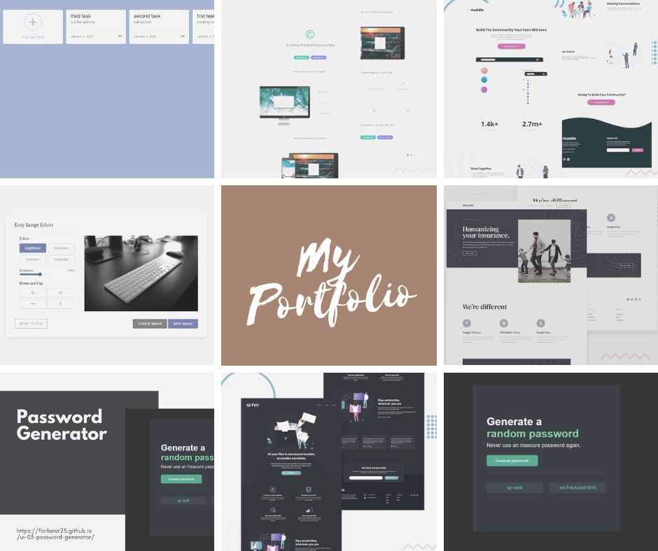

My Latest Portfolio
Welcome to the heart of my creative journey a curated collection of projects that define my passion for Front-End Developer. Each entry in this portfolio is a chapter in my exploration of design, innovation, and impactful storytelling. Let's embark on a visual odyssey through some of my most noteworthy creations:
